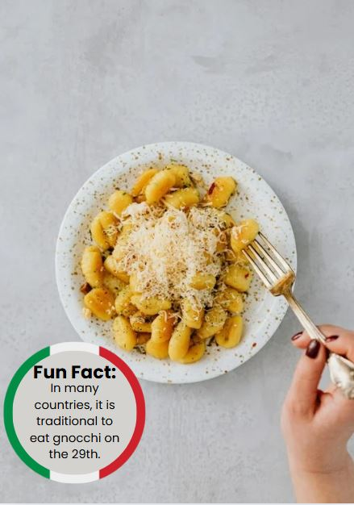

|  |
Ingriedenti1kg potatoes 300gr of flour 1 egg Salt |
Ricetta-In a large pot boil un peeled potatoes until tender, remove from the pot and let cool enough to handle, then remove the skin. -Then pass through a Potato Ricer or mash. -On a flat surface mix together the flour and salt make a well in the middle and add the potatoes and egg, mix together with your fingers to form a soft dough, it should not stick to your fingers. -On a lightly floured surface, cut small amounts of dough to form ropes and cut into 3/4 inch (2 cm) pieces, then slide each piece on a fork and squeeze a little (but not too hard). -Sprinkle with a little bit of flour and toss, so they don’t stick together. -Let the gnocchi rest for 20 minutes before cooking. -In a large pot of salted boiling water cook the gnocchi, gnocchi are ready when they float to the top. -Drain and toss with desired sauce. |